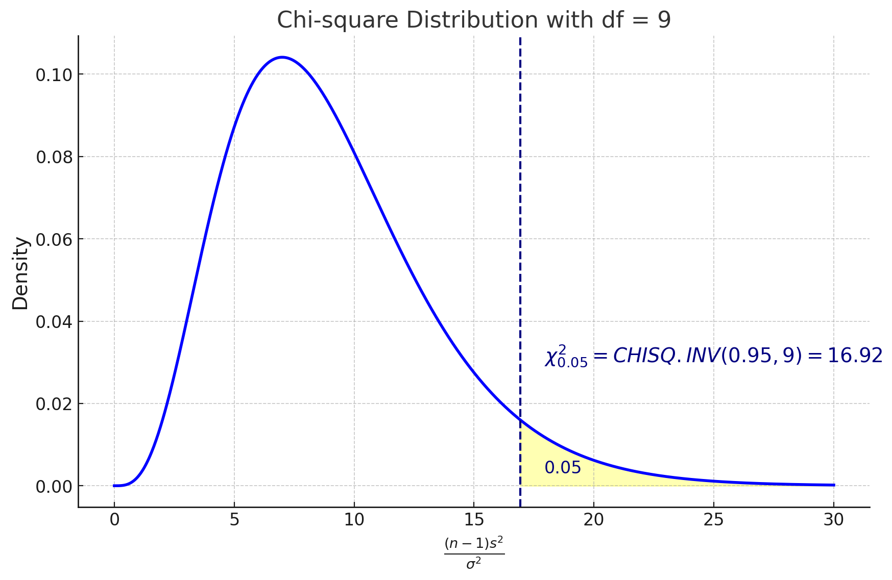
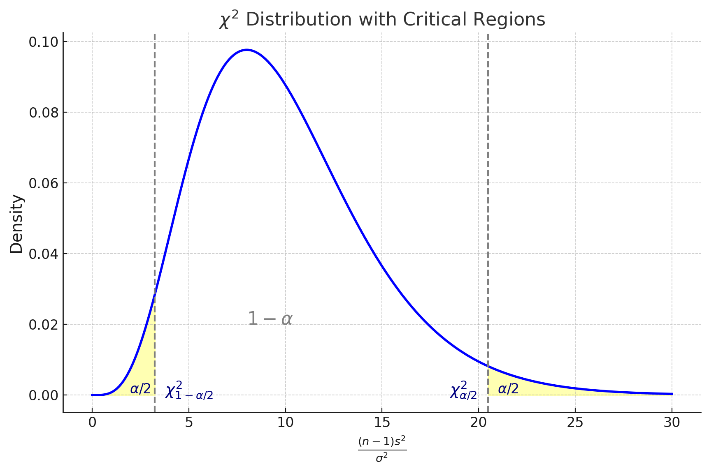
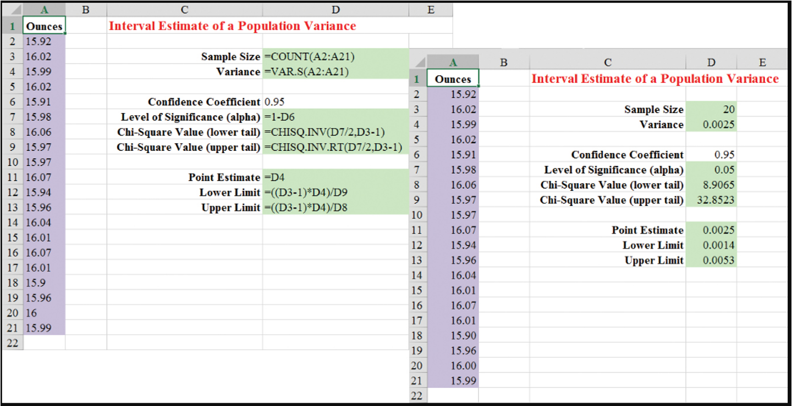
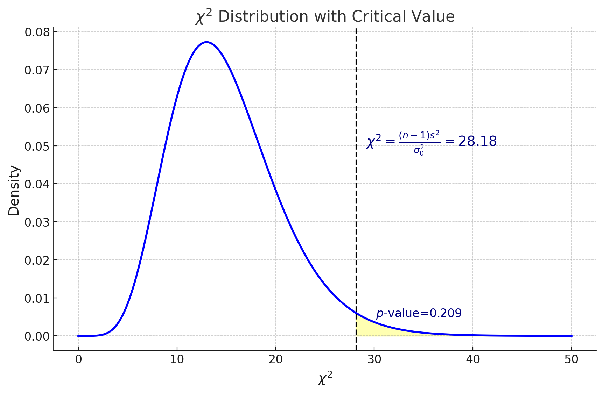

MGMT 30500: Business Statistics
Hyp. Testing Rvw. 02
Overview
- Inference about a Population Variance
- Chi-Square Distribution
- Interval Estimation of \(\sigma^2\)
- Hypothesis Testing about a Population Variance
- Inferences about Two Population Variances
- F-Test Two-Sample for Variances - Example Excel
Statistical Inference
Statistical Inference
- Confidence level: 95% \((1-\alpha)\) (Middle area; Confidence level)
- Confidence multipliers
- Upper/lower tail areas
- One- or 2-sided intervals
- Sampling errors and Margin of Error (MOE)
- Find range of all reasonable parameter values
- Significance level: 5% \((\alpha)\) (Tail area(s); Risk)
- Critical values
- p-values
- Which side \((H_a)\) depends mostly on data
- Strength of sample evidence against the hypothesized value (via p-value)
- Test a specific hypothesized parameter value
Hypothesis testing framework
Hypothesis testing framework
Hypothesis testing can be used to determine whether a statement about the population or a hypothesized value of the population parameter should or should not be rejected.
We start with a null hypothesis (\(H_0\)) that represents the status quo.
We also have an alternative hypothesis (\(H_A\)) that represents our research question, i.e. what we’re testing for.
We conduct a hypothesis test under the assumption that the null hypothesis is true.
If the test results suggest that the data do not provide convincing evidence for the alternative hypothesis, we stick with the null hypothesis. If they do, then we reject the null hypothesis in favor of the alternative.
We will never know which hypothesis is true, unless we sample the entire population.
Inference about a Population Variance
Inference about a Population Variance
A variance can provide important decision-making information.
Consider the production process of filling containers with a liquid detergent product.
- The mean filling weight is important, but so too is the variance of the filling weights.
- By selecting a sample of containers, we can compute a sample variance for the amount of detergent placed in a container.
- If the sample variance is excessive, overfilling and underfilling may be occurring even though the mean is correct.
Chi-Square Distribution
Chi-Square Distribution
We can use the chi-square distribution to develop interval estimates and conduct hypothesis tests about a population variance \(\sigma^2\).
The chi-square (\(\chi^2\)) distribution is the sum of squared standardized normal random variables (a variable that follows a normal distribution) such as \((z_1)^2 + (z_2)^2 + (z_3)^2\) and so on.
The chi-square distribution is based on sampling from a normal population.
The sampling distribution of \((n-1)S^2/\sigma^2\) has a chi-square distribution with \(n-1\) degrees of freedom whenever a simple random sample of size \(n\) is selected from a normal population with population variance \(\sigma^2\). \(S^2\) is the sample variance.
Chi-Square Distributions with different degrees of Freedom
Chi-Square Distribution
We will use the notation \(\chi^2_{\alpha}\) to denote the value for the chi-square distribution that provides an area of \(\alpha\) to the right of the stated \(\chi^2_{\alpha}\) value.

Chi-Square Distribution

Interval Estimation of \(\sigma^2\)
Interval Estimation of \(\sigma^2\)
There is a \((1-\alpha)\) probability of obtaining a \((n-1)S^2/\sigma^2\) value such that
\[ \chi^2_{(1-\alpha/2)} \leq \frac{(n-1)S^2}{\sigma^2} \leq \chi^2_{\alpha/2} \]
Performing algebraic manipulation, we obtain an \(1-\alpha\) interval estimate of the population variance \[ \frac{(n-1)S^2}{\chi^2_{\alpha/2}} \leq \sigma^2 \leq \frac{(n-1)S^2}{\chi^2_{(1-\alpha/2)}} \]
Taking the square root of the upper and lower limits of the variance interval provides the confidence interval for the population standard deviation. \[ \sqrt{\frac{(n-1)S^2}{\chi^2_{\alpha/2}}} \leq \sigma \leq \sqrt{\frac{(n-1)S^2}{\chi^2_{(1-\alpha/2)}}} \]
Interval Estimation of \(\sigma^2\) - Example
Example: Liquid detergent product filling process
The filling mechanism for the process of filling liquid detergent product in a container is adjusted such that mean filling weight is 16 ounces per container. A sample of 20 containers was taken to test this. If the sample variance is modest, the production process will be continued. If the sample variance is excessive, the filling mechanism will be readjusted to reduce the filling variance.
The sample variance for the filling quantities is found to be \(s^2 = .0025\).
Choose \(\alpha = .05\).
Interval Estimation of \(\sigma^2\) - Example
- Two confidence multipliers: (df = n-1 = 20-1 = 19) \[ \chi^2_{0.025} = \text{CHISQ.INV}(0.975, 19) = 32.852 \] \[ \chi^2_{0.975} = \text{CHISQ.INV}(0.025, 19) = 8.907 \]
Interval Estimation of \(\sigma^2\) - Example
A 95% confidence interval for the population variance is given by: \[ \frac{(20-1)0.0025}{32.852} \leq \sigma^2 \leq \frac{(20-1)0.0025}{8.907} \]
\[ 0.0014 \leq \sigma^2 \leq 0.0053 \]
Taking the square root of these values provides a 95% confidence interval for the population standard deviation.
\[ 0.0380 \leq \sigma \leq 0.0730 \]
We are 95% confident that the process standard deviation of the filling weight per container is between 0.0380 ounces and 0.0730 ounces.
Interval Estimation of \(\sigma^2\) - Example Excel

Hypothesis Testing about a Population Variance
Hypothesis Testing about a Population Variance
Hypotheses
- \(H_0: \sigma^2 \geq \sigma_0^2\)
- \(H_a: \sigma^2 < \sigma_0^2\) (Left-tailed)
where \(\sigma_0^2\) is the hypothesized value for the population variance.
Test Statistic
\[ \chi^2 = \frac{(n-1)S^2}{\sigma_0^2} \]
Rejection Rule (Left-tailed test)
Critical-value approach:
- Reject \(H_0\) if \(\chi^2 \leq \chi^2_{(1-\alpha)}\)
p-value approach:
- Reject \(H_0\) if p-value \(\leq \alpha\)
where \(\chi^2_{(1-\alpha)}\) is based on a chi-square distribution with \(n-1\) df.
Hypothesis Testing about a Population Variance
Hypotheses
\[ \begin{aligned} H_0 &: \sigma^2 \leq \sigma^2_0 \\ H_a &: \sigma^2 > \sigma^2_0 \quad \text{(Right-tailed)} \end{aligned} \]
where \(\sigma^2_0\) is the hypothesized value for the population variance.
Test Statistic
\[ \chi^2 = \frac{(n-1)S^2}{\sigma^2_0} \]
Rejection Rule (Right-tailed test)
Critical-value approach:
Reject \(H_0\) if \(\chi^2 \geq \chi^2_\alpha\)
p-value approach:
Reject \(H_0\) if p-value \(\leq \alpha\)
where \(\chi^2_\alpha\) is based on a chi-square distribution with \(n-1\) df.
Hypothesis Testing about a Population Variance
Hypotheses
\[ \begin{aligned} H_0 &: \sigma^2 = \sigma^2_0 \\ H_a &: \sigma^2 \neq \sigma^2_0 \quad \text{(Two-tailed)} \end{aligned} \]
where \(\sigma^2_0\) is the hypothesized value for the population variance.
Test Statistic
\[ \chi^2 = \frac{(n-1)S^2}{\sigma^2_0} \]
Rejection Rule (Two-tailed test)
Critical-value approach:
Reject \(H_0\) if \(\chi^2 \leq \chi^2_{(1-\alpha/2)}\) or \(\chi^2 \geq \chi^2_{\alpha/2}\)
p-value approach:
Reject \(H_0\) if p-value \(\leq \alpha\)
where \(\chi^2_{(1-\alpha/2)}\) and \(\chi^2_{\alpha/2}\) are based on a chi-square distribution with \(n-1\) df.
Hypothesis Testing about a Population Variance - Example
Example: St. Louis Metro Bus Company
St. Louis Metro Bus Company wants to promote an image of reliability by encouraging its drivers to maintain consistent schedules. The company specifies an arrival time variance of 4 or less when arrival times are measured in minutes.
We will conduct a hypothesis test (with \(\alpha = 0.05\)) to determine whether the arrival time population variance is excessive.
Hypothesis Testing about a Population Variance - Example
Hypotheses: \[ H_0: \sigma^2 \leq 4 \] \[ H_a: \sigma^2 > 4 \]
A random sample of 24 bus arrivals taken at a downtown intersection provided a sample variance of \(s^2 = 4.9\).
Test Statistic
\[ \chi^2 = \frac{(n-1)S^2}{\sigma_0^2} = \frac{(24-1)(4.9)}{4} = 28.18 \]
Hypothesis Testing about a Population Variance - Example
\(p\)-value Approach:

1-CHISQ.DIST(28.18, 23, TRUE) = 0.209 > 5%. Fail to reject \(H_0\).
Hypothesis Testing about a Population Variance - Example
5% Critical Value = CHI.INV(0.95, 23) = 35.172
Rejection Rule:
Reject \(H_0\) if \(\chi^2 \geq 35.172\)
Because \(\chi^2 = 28.18\), we fail to reject the null hypothesis.
Conclusion: Based on the current sample, we do not have significant statistical evidence to conclude that the arrival time variance is greater than 4. The significance level is 5%.
Hypothesis Testing about a Population Variance - Example Excel

Inferences about Two Population Variances
Inferences about Two Population Variances
We may want to compare the population variances (variation) in:
- product quality resulting from two different production processes,
- temperatures for two heating devices, or
- assembly times for two assembly methods.
We use sample data collected from two independent normal populations.
The two sample variances will be the basis for making inferences about the two normal population variances.
Hypothesis Testing about the Variances of Two Populations
One-Tailed Test: (Right tail)
Hypotheses: \[ H_0: \sigma_1^2 \leq \sigma_2^2 \quad \left( \frac{\sigma_1^2}{\sigma_2^2} \leq 1 \right) \] \[ H_a: \sigma_1^2 > \sigma_2^2 \quad \left( \frac{\sigma_1^2}{\sigma_2^2} > 1 \right) \]
The population providing the larger sample variance is designated as Population 1.
The Null Hypothesis is based on the assumption that the variances are equal.
Test Statistic:
\[ F = \frac{S_1^2}{S_2^2} \quad \text{follows F-distribution } (n_1-1, n_2-1), \text{ if } H_0(=) \text{ is true}. \]
Hypothesis Testing about the Variances of Two Populations
Rejection Rule:
Critical-value approach:
- Reject \(H_0\) if \(F \geq F_{\alpha, n_1-1, n_2-1}\).
- where the value of \(F_{\alpha, n_1-1, n_2-1}\) is based on an \(F\) distribution with \(n_1 - 1\) (numerator) and \(n_2 - 1\) (denominator) d.f., such that the upper tail area is \(\alpha\).
p-value approach:
- Reject \(H_0\) if p-value \(\leq\alpha\).
Hypothesis Testing about the Variances of Two Populations
Two-Tailed Test
Hypotheses:
\[ H_0 : \sigma^2_1 = \sigma^2_2 \] \[ H_a : \sigma^2_1 \neq \sigma^2_2 \]
- Denote the population providing the larger sample variance as population 1.
- The Null Hypothesis is based on the assumption that the variances are equal.
Test Statistic:
\[ F = \frac{S^2_1}{S^2_2} \]
follows F-distribution \((n_1-1, n_2-1)\), if \(H_0 ( =)\) is true.
Hypothesis Testing about the Variances of Two Populations
Decision Rule:
Critical-value approach:
- Reject \(H_0\) if \(F \geq F_{\alpha/2, n_1-1, n_2-1}\).
- where the value of \(F_{\alpha/2, n_1-1, n_2-1}\) is based on an \(F\) distribution with \(n_1 - 1\) (numerator) and \(n_2 - 1\) (denominator) d.f.
p-value approach:
- Reject \(H_0\) if p-value \(\leq \alpha\).
Hypothesis Testing about the Variances of Two Populations - Example
Example: Dullus County School
Dullus County school wants to select one among the Milbank Company and Gulf Park Company for the bus service contract for the coming year. The variance of arrival/pickup time will be used as a primary measure of the quality of service.
We will conduct a hypothesis test with \(\alpha = 10\%\) to see if the variances are equal for Milbank Company and Gulf Park Company.
Hypothesis Testing about the Variances of Two Populations - Example
Hypotheses:
- \(H_0\): Milbank and Gulf Park have same arrival time variance
- \(H_a\): Their variances are not equal- Two-Tailed
\[ H_0 : \sigma^2_1 = \sigma^2_2\]
\[ H_a : \sigma^2_1 \neq \sigma^2_2 \]
A sample of 26 arrival times for the Milbank service provided a sample variance of 48 and a sample of 16 arrival times for the Gulf Park service provided a sample variance of 20.
Because the Milbank sample provided a larger sample variance, we will denote Milbank as Population 1.
Hence, \(n_1 = 26, n_2 = 16\).
Recall \(\alpha = 10\%\).
Hypothesis Testing about the Variances of Two Populations - Example
Test statistic \(F\) has 25 d.f. (numerator), and 15 d.f. (denominator)
\[ F = \frac{S^2_1}{S^2_2} = \frac{48}{20} = 2.40 \]
Critical Value

Hypothesis Testing about the Variances of Two Populations - Example
Critical-value approach:
\[\alpha / 2 = 0.05\]
Upper-tailed critical value
= F.INV(0.95, 25, 15)= 2.28Decision rule:
- Reject \(H_0\) if \(F \geq 2.28\).
Because \(F = 2.40\) is greater than 2.28, we reject null hypothesis.
Hypothesis Testing about the Variances of Two Populations - Example
p-value approach:

25 d.f. (numerator), and 15 d.f. (denominator),
p-value
= 2*(1- F.DIST(2.40, 25,15, TRUE))= 2*0.041 = 0.082.Because \(\alpha = 0.10\), we have p-value \(< \alpha\) and therefore, null hypothesis is rejected.
F-Test Two-Sample for Variances - Example Excel
Example: Dullus County School
Step 1: Click the Data tab on the Ribbon.
Step 2: In the Analysis group, click Data Analysis.
Step 3: When the Data Analysis dialog box appears: Choose F-Test Two-Sample for Variances.
Step 4: When the F-Test Two-Sample for Variances dialog box appears: (see details on next slide).
F-Test Two-Sample for Variances - Example Excel
F-Test Two-Sample for Variances - Example Excel
Example: Dullus County School
Enter A1: A27 in the Variable 1
Range box.
Enter B1:B17 in the Variable 2
Range box.
Select Labels.
Enter .05 in the Alpha box.
Select Output Range and enter
D1 in the box.
Click OK.

F-Test Two-Sample for Variances - Example Excel
Result:

Summary
Summary
Some key takeaways from this session:
Chi-Square Distribution
- The chi-square distribution is used for interval estimation and hypothesis testing about a population variance.
- It is the sum of squared standardized normal random variables.
- Understanding its dependence on sampling from a normal population and degrees of freedom.
Interval Estimation of \(\sigma^2\)
- It is easy to convert the interval estimate of variance to an interval estimate of standard deviation.
Hypothesis Testing about a Population Variance
- We use the chi-square distribution for the test statistic.
- We can interpret results using both the critical value approach and the p-value approach.